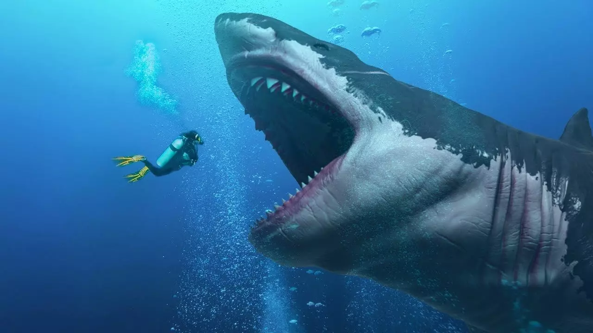

Oceans provide at least a sixth of the animal protein people eat. Living oceans absorb carbon dioxide from the atmosphere and reduce climate change impacts. The diversity and productivity of the world's oceans is a vital interest for humankind. Our security, our economy, our very survival all require healthy oceans.

Sharks
With fossil records dating back 400 million years, sharks have outlived the dinosaurs and many other forms of life currently on earth. There are more than 1,000 species of sharks and rays, with new species discovered every year.These majestic top predators that are so essential to the natural order of marine ecosystems now face their most severe threat from overfishing. Many species are threatened with extinction, with some families of rays such as sawfishes in peril. While sharks and rays have been an irreplaceable resource for coastal communities in the developing world for centuries, this unique balance is in danger of being lost forever.With our oceans severely degraded, restoring sharks is key to improving the resilience of these water bodies to climate change. While sharks' diverse range of species adds complexity to our conservation efforts, the dwindling numbers of these amazing creatures from overfishing and demand for their fins and meat increases the urgency of the task. Through our multi-pronged strategies, and guided by the Global Priorities for Conserving Sharks and Rays - A 2015-2025 Strategy, we strive to restore the balance between humans and sharks.
From worldwildlife organization
The demand for shark fin
The growing trade in shark fins –often used to make an expensive Asian soup—has become a serious threat to many shark species. The latest research suggests that around 100 million sharks may be killed annually, often targeted for their fins. This practice affects many different shark species, including whale sharks.The overfishing of sharks happens because of the huge demand—mainly for shark fins—and a lack of management to ensure shark fisheries are sustainable. Some species, such as spiny dogfish and porbeagle, are targeted primarily for their meat.
What If There Were No Sharks?
Sharks can be huge, like the massive whale shark (Rhincodon typus); or human-hand-size, like the pocket shark (Mollisquama parini). However, it's the great white shark (Carcharodon carcharias) that typically commands the public's imagination. These sharks have a reputation for aggressiveness toward people, shaped by decades of terrifying portrayals in movies. In fact, these fearful pop-culture portraits of great whites are so pervasive that they might lead some people to wonder if the world would be better off with no sharks at all.


Megalodon: Facts about the long-gone, giant shark
The megalodon, which went extinct millions of years ago, was the largest shark ever to prowl the oceans and one of the largest fish on record. The scientific name, Carcharocles megalodon, means "giant tooth," and for good reason: Its massive teeth are almost three times larger than the teeth of a modern great white shark. The megalodon's fossilized bones and teeth give scientists major clues about what the creature was like and when it died off.